Welcome
This notebook contains my personal notes for CS7646: Machine Learning for Trading, offered at the Georgia Institute of Technology. A summary of the course follows:
This course introduces students to the real world challenges of implementing machine learning based trading strategies including the algorithmic steps from information gathering to market orders. The focus is on how to apply probabilistic machine learning approaches to trading decisions. We consider statistical approaches like linear regression, Q-Learning, KNN, and regression trees and how to apply them to actual stock trading situations.
Course links:
Part 1
The following section contains my notes for Part 1 of the course "CS 7646: Machine Learning for Trading". This section of the course covers the manipulation of financial data using Python.
1-1: Reading and plotting stock data
This lesson contains a basic introduction to the manipulation of data using
Python. Most of the data provided in this course comes in the format of .csv
files.
What does real stock data look like?
Usually, each .csv file containing stock data is named after its respective
stock symbol. We can expect the following headers in the stock's .csv file:
- Date
- Open
- High
- Low
- Close
- Volume
- Adjusted Close (Adj Close)
Each .csv file is sorted from newest to oldest record, based upon the Date
field.
The pandas dataframe
pandas is a Python library used to manipulate large sets of data. When
pandas ingests .csv, it stores the rows and columns in a certain format, or
dataframe, that allows us to easily access different sets of data
programmatically. Below is an example drawing from the class of the Pandas
dataframe, each plane of the dataframe is separated by the headers we listed
above: Close, Volume, Adj Close, etc.

Quizzes
Which fields would you expect to see in a .csv file of stock data?
- Number of employees
- Date / time
- Company name
- Price of the stock
- Company's hometown
1-2: Working with multiple stocks
This lesson covers more in-depth manipulation of stock data in .csv files with
pandas. In this lesson, we create empty dataframes with pandas and
selectively include data from a number of .csv files of different stock
symbols. This lesson provides examples of selecting stock information based upon
date ranges from various stock symbols, and provides guidance on how to avoid
ingesting invalid (NaN values) into the dataframe. An example provided by the
lesson can be found here.
Inner join vs outer join
An inner join of a table provides the common items between the two tables being joined. An example Venn-diagram of the operation is provided below:
An outer join of a table provides the common items between two tables, as well, however it also provides the left or right quantities of the two tables being joined. An example Venn-diagram of a left outer join and a right outer join are provided below:

The default method of join for a pandas dataframe is the left outer join.
Normalizing price data
The preferred method to normalize data within a pandas dataframe is to conduct
the following operation in Python:
my_dataframe = my_dataframe / mydataframe.ix[0, :]
Quizzes
How many days were U.S. stocks traded at NYSE in 2014?
- 365
- 260
- 252
1-3: The power of NumPy
NumPy's relationship to Pandas
pandas is essentially a wrapper for numpy ndarray objects. Below is a
screenshot from the lectures providing a conceptual overview of the objects'
relationships:

1-4: Statistical analysis of time series
Global statistics
We can easily compute global statistics like mean, median,
standard deviation, and more using pandas dataframes. A high-level
interpretation provided in the course lecture is provided below:

Rolling statistics
Rolling statistics are statistics observed during a time-slice of the global data. These rolling statistics allow us to derive trends from the global data. A high-level interpretation provided in the course lecture is provided below:
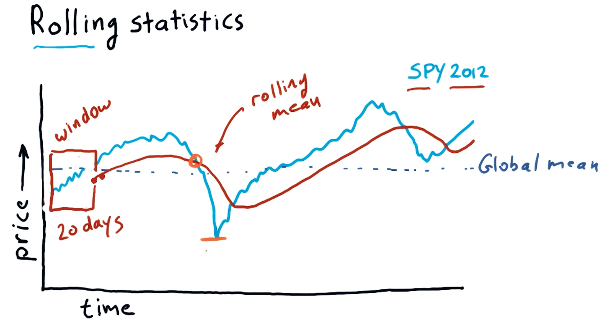
Bollinger bands
Bollinger bands are a trading concept where we maintain a rolling mean and define two bands that are separated two standard deviations from the rolling mean in both directions. Once a stock's value crosses below the lower threshold and then crosses above it, we can consider this a buy signal. Similarly, we can detect a sell signal when a stock crosses above the higher threshold and begins to dip below it. A high-level interpretation provided in the course lecture is provided below:
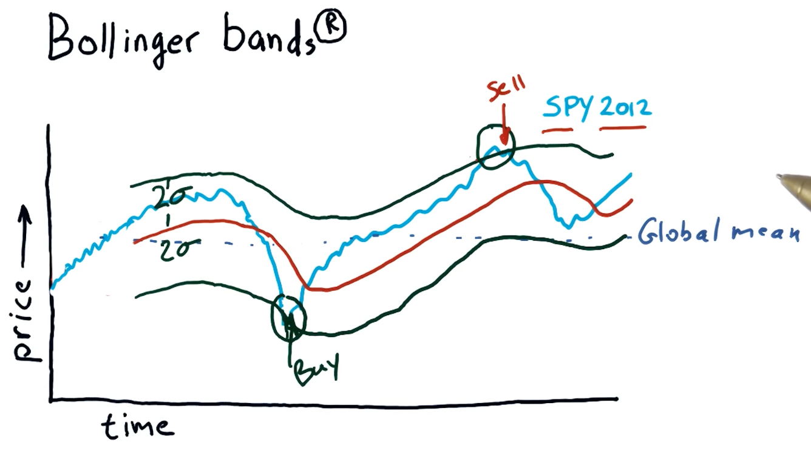
Daily returns
Daily returns can be easily calculated using the following equation:
daily_ret(t) = (price[t] / price[t-1]) - 1
Where t == date.
A high-level representation of daily returns from the course lecture is provided below:

Cumulative returns
Cumulative returns can be easily calculated using the following equation:
cumulative_ret(t) = (price[t] / price[0]) - 1
A high-level representation of cumulative returns from the course lecture is provided below:
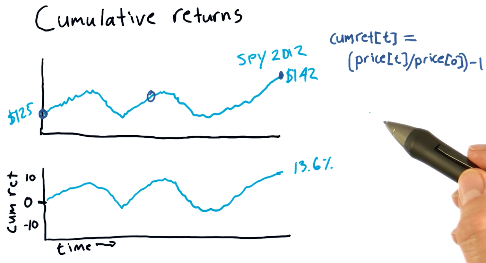
Quizzes
Which statistic is best to use to determine buy / sell signals?
- rolling sum
- global mean
- global max
- rolling standard deviation
1-5: Incomplete data
While we might think financial data is well documented, sometimes financial data that we want to inspect can be missing from public archives. This lesson covers how we can mitigate the consequences of missing financial data.
Pristine data
Below is a screenshot from the lecture listing some of the issues with incomplete financial data:

Why data goes missing
From the lecture, some examples are given as to why stocks disappear or appear in the data / timeline. Some stocks get acquired by different companies, so companies completely go under and are no longer traded, and some stocks appear in the middle of the timeline because they are newer. A high-level representation from the lecture is provided below:
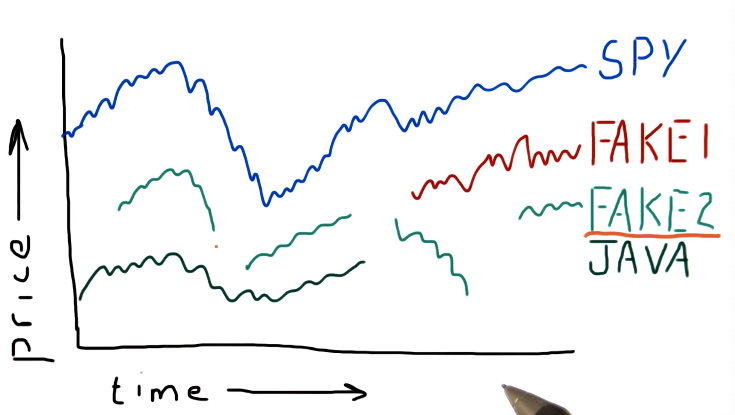
What can we do?
Pandas provides us with the ability to fill forward and fill backwards missing data between two points in time with the last known-good data point. It's best practice to fill forward first and then fill backwards. A high-level representation of this concept is from the lecture is provided below:

Pandas fillna()
Pandas provides us with a powerful function called fillna() that can be used
with dataframes to fill forward or fill backwards missing values.
1-6: Histograms and scatter plots
This lesson covers how to utilize histograms and scatter plots to analyze and compare daily returns of multiple stocks. This is a more useful technique than analyzing a stock by itself.
Daily returns
This section discusses what a histogram looks like and what information it captures. A high-level representation of a histogram in comparison with a stock price and daily returns graph can be found below:

Histogram of daily returns
In the below example, the lecture discusses the normal shape of a histogram which, like most things, is a bell curve. The lecture discusses the concept of kurtosis, describing fat tails and skinny tails - a measurement of the distribution of the histogram.
Fat tails mean that there are a large number of occurrences happening on the outer edges of the distribution, meanwhile skinny tails indicate the opposite. Below is a high-level representation of these concepts:
Scatterplots
This section discusses how scatterplots are generated to compare two stocks. As we can see, general trends begin to form when a scatterplot is generated for two stocks, allowing us to infer about the behavior or performance for a particular stock. Below is a high-level representation provided by the lecture:

Scatterplot slopes
In this section of the lecture, alpha and beta are described for a given scatterplot. alpha and beta are both functions of the slopes of the possible lines that can be drawn for a given scatterplot. Beta describes how reactive a particular stock is to the market. If the market goes up by %1, this stock would also achieve %1 - if the beta was equal to one. If the beta was equal to two, the stock would achieve %2 while the market achieved %1.
In a similar vein, we have alpha - the intersection between the line we've drawn using the scatterplot and the vertical axis. alpha describes how a stock performs on average better than market making stocks like the S&P500.
A high-level representation of these concepts is provided below:
Correlation
Correlation is a measurement of how close the dots on a scatterplot are to the line we've drawn through the scatterplot.
1-7: Sharpe ratio and other portfolio statistics
In this lesson we cover portfolio statistics used in the real world and how to calculate and interpret these statistics using Python.
Daily portfolio values
Given a starting investment amount, allocation percentages to respective stocks, and a window in time to conduct calculations, we can calculate the daily value of a portfolio over a given period of time.
Taking the prices dataframe, we can normalize the data and apply a series of
transforms to arrive at an array of values describing our portfolio's daily
value over a given period of time. Below is a high-level interpretation of how
to achieve this outcome given a dataframe:

Portfolio statistics
Using our new portfolio value array, we can calculate a series of important statistics, such as:
- cumulative return
- average daily return
- standard daily return
- sharpe ratio
A high-level interpretation from the lecture is provided below. This image also provides the equations to derive the statistics listed above:

Sharpe ratio
The sharpe ratio of a portfolio is a statistic that adjusts overall return for risk apparent in the portfolio. This is mostly useful when comparing two stocks or portfolio wherein one has a greater return but poses a greater risk - it allows us to make an informed decision about the riskier of the two stocks.
A high-level representation of these concepts from the lectures is provided below:

Computing sharpe ratio
To compute the sharpe ratio we need to divide the Expected Value of the
portfolio returns minus the risk free rate by the standard deviation of the
portfolio returns minus the risk free rate. The slide from the lectures, below,
provides possible references for the risk free rate, however, traditionally it's
been 0.

Sharpe ratio frequency
The sharpe ratio can be affected by the frequency in which sampling of the
portfolio occurs - it was originally intended to be an annual measure. In order
to acquire the annualized version of the sharpe ratio, you multiply the
sharpe ratio result by the constant k. This is calculated by taking the
square root of the frequency of sampling. The slide from the lecture provides
more insight into how the sharpe ratio is affected by frequency:

Quizzes
What is the sharpe ratio?
Below is a quiz from the class providing us with a scenario to calculate the sharp ratio with concrete values:

1-8: Optimizers
This lesson covers optimizers, algorithms that can do the following:
- Find the minimum values of functions
- Build parameterized models based on data
- Refine allocations to stocks in portfolios
To use an optimizer, we conduct the following steps:
- Provide a function to minimize
- Provide an initial guess of what the minimal outcome is
- Call the optimizer repeatedly until we reach the minimum
Minimization example
The following example for minimization is provided by the lecture. The minimizer in this example continues to test values for the given equation, tracking the minimum value until it reaches the lowest possible number. This algorithm rejects values that are high than it's most recent minimum, and continues to search for the lowest possible value with greater granularity as it completes iterations of the minimization algorithm.

Convex problems
When finding the minima of a given equation, we can run into an issue for complex equations or convex problems. In these problems, the minima can be difficult to find for a traditional minimizing algorithm due to the odd shape of the equation when graphed. It can have local minima, or portions of the line that plateau. Below is a slide from the lecture demonstrating this problem and how a minimization algorithm could solve it:

Building a parameterized model
Given a scatterplot like the one shown below from the lecture, a minimizer can determine the coefficients for a given equation by minimizing the distance of a graphed line (from the equation) to the dots on the scatterplot. This distance is known as error. The minimizer will attempt to minimize the amount of error, finding the appropriate coefficients.
1-9: How to optimize a portfolio
What is portfolio optimization?
Given a set of assets and a time period, find an allocation of funds to assets that maximizes performance.
What is performance?
We can choose from a number of statistics such as:
- Cumulative returns
- Volatility or risk
- Risk adjusted returns (Sharpe ratio)
Framing the problem
So how do we go about optimizing a portfolio? We use an optimizer to find the inverse Sharpe ratio for a given set of allocations in a portfolio. A high-level representation provided by the lecture is provided below:

Ranges and constraints
Ranges and constraints on the values of X provided to the optimizer for the
function to be minimized can help speed-up the rate at which the optimize can
solve the minimization of the function. Ranges in this case should be
limited from 0 to 1 as these represent percentages. Constraints in this
example specify that the sum(x) should equal 100 - meaning our allocations
reach 100% for an effectively optimized portfolio. Below is the slide from the
lecture discussing this topic:
Part 2
The following section contains my notes for Part 2 of the course "CS 7646: Machine Learning for Trading". This section of the course covers computational investing.
2-1: So you want to be a hedge fund manager?
This lesson covers the fundamentals of being a portfolio manager.
Types of funds
The following are types of funds:
- ETFs - exchange traded funds
- Buy and sell like stocks
- Represent baskets of stocks
- Transparent
- Mutual funds
- Buy and sell at the end of the trading day
- Quarterly disclosure
- Less transparent
- Hedge funds
- Buy and sell by agreement
- No disclosure
- Not transparent
Incentives: How are they compensated?
- ETFs - Managers of ETFs are compensated according to an expense ratio, related to AUM.
- Mutual funds - Compensated according to an expense ratio, usually much higher than ETFs.
- Hedge funds - Follow an old model called two and twenty.
Two and twenty
Below is a breakdown from the lectures on how the two and twenty compensation model works for hedge fund managers:
How do hedge funds attract investors?
Hedge funds are usually designed to attract and do business with the following entities:
- Individuals - usually particularly wealthy individuals because hedge funds are on average only made up of 100 people
- Institutions - institutions like Harvard or Georgia Tech that want to park assets and watch them accrue in value
- Funds of funds
Why would one of these entities pick a particular hedge fund over another?:
- Track record - potential investors will always review the track record of a particular fund. The fund should have no less than 5 years of maturity.
- Simulation and story - potential investors would like to see the backtesting results of a particular strategy, and a story as to why the hedge fund manager believes their strategy is novel or successful.
- Good portfolio fit - potential investors will be on the lookout to find a portfolio they don't already have. It's like investors will not invest into a hedge fund that already covers a sector of the market they have assets in.
Hedge fund goals and metrics
Hedge funds usually have one of the two following goals:
- Beat a benchmark - following or beating a benchmark like the SP500
- Riskier because it usually follows the market and its trends.
- Absolute return - playing long and short positions so that, at the
end of the year, the fund is positive.
- Usually doesn't have large returns, but a safe bet to always have positive returns.
We calculate the metrics like we've done in other lessons. You can find the lecture slide for this section of the lesson, below:
The computing inside a hedge fund
The lecture provides us with a high-level overview of computing within a hedge fund, this can be found below. One thing to note with this image is that, if the hedge fund wanted to enter a particular position, e.g. purchase 1 mil worth of AAPL stock, the trading algorithm isn't going to create a BUY signal to conduct this immediately. The trading algorithm leverages feedback from the market and executes orders incrementally to avoid influencing the market too much while allowing the fund to enter a particular position.
Up next, the lecture provides us with how target portfolios are calculated. This is typically done using an optimizer like we've seen in previous lessons. The optimizer leverages inputs from a forecaster, the current portfolio, historical price data, and some risk constraints provided by the hedge fund manager. A high-level overview of this concept is provided below:
Finally, the lecture provides us with a high level overview of how the forecaster is creating the forecast leveraged by the optimizer. Again, historical data feeds into this, as well as some proprietary information feed being leveraged by the hedge fund.
Definitions
- liquid - the ease at which one can buy or sell shares within a particular holding, e.g. Stocks, ETFs. These usually have a high volume of trading.
- large cap - represented by number of shares * price of each share
- assets under management (AUM) - buzz word, how much money is being managed by the fund?
- two and twenty - 2 percent of AUM and 20 percent of the profits.
2-2: Market mechanics
This lesson covers some fundamentals of how orders are handled on the market.
What is an order?
Usually orders are sent to a stock broker and are executed on your behalf. Below is all the information that must go into a well-formed order:
- Buy or sell
- Symbol
- Number of shares
- Limit or Market
- Market specifies that you're ok with buying or selling at the current market's price.
- A limit specifies that you're asking for a specific price.
- Price
The order book
Below is a high-level overview of what a market's order book could look like during a trading day - provided by the lecture.
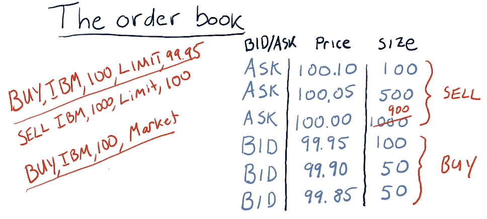
How orders affect the order book
The lecture provides a high-level overview of how the order book is affected by buy and sell orders in the market. In this example, all buy and sell orders are market orders.

How orders get to the exchange
The lecture provides a high-level overview of how orders reach the exchange after being received by the brokers. The image below describes the existence of dark pools - I'm not sure how these are legal.
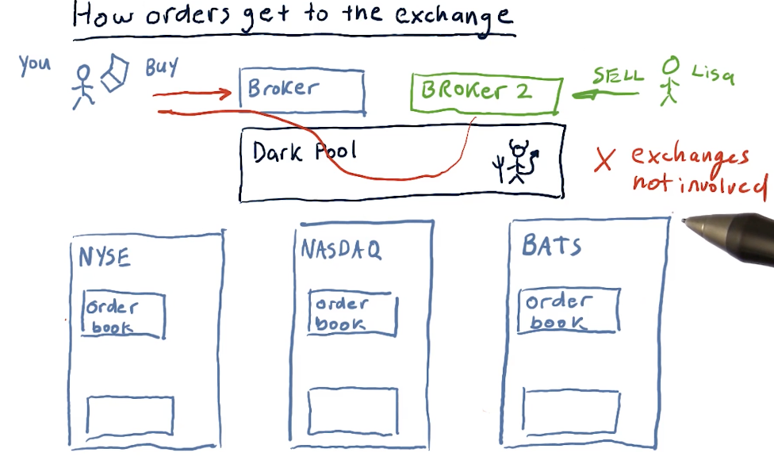
How hedge funds exploit market mechanics
Hedge funds have the ability to be co-located with the exchanges, so they can see trends in stocks faster than those who are trading remotely via brokers. Using this, they exploit the time different to buy and sell stocks at a profit. They also conduct this exploit across continents with different exchanges. A high-level overview from the lectures is provided below:

Additional order types
- Stop loss - sell the stock when it loses a certain amount of value
- Stop gain - sell the stock when it gains a certain amount of value
- Trailing stop
- Sell short - take a negative position against a stock
Short selling
Short selling is a strategy where we borrow stocks from someone, sell those stocks to someone looking to buy, and then when the person we borrowed from wants their stock back, we buy the stock and give the stock back as promised. What we're hoping for is that the stock decreases in value, allowing us to buy the stock at a lower price, netting us a profit.
What can go wrong?
In short selling, we can have an unlimited amount of losses. If the stock increases, we sell back at a loss, and we must give back the stock when the person we borrowed from wants their stock back.
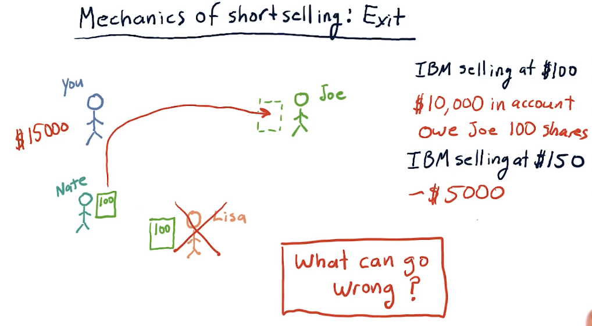
2-3: What is a company worth?
Why company value matters
A company has a true value and a stock price. The true value is not always readily apparent, and the stock value goes high or low over time, depending on trends in the market. Like always, when a stock is overvalued we want to sell and when a stock is undervalued, we want to buy.
- Intrinsic value - the value of a company as estimated by future dividends
- Book value - assets that the company owns
- Market cap - value of the stock on the market
Below is a high-level overview from the lecture of the concepts above:

The value of a future dollar
This section of the lecture discusses the value of a future dollar - how we can calculate how much a dollar will be worth given a particular interest rate on a bond.
The equation is as follows:
price_value = future_value / (1 + interest_rate)**years
Obviously, a dollar now is worth more than a dollar in the future. The high-level representation below displays how to calculate price value against future value given an interest rate.
Intrinsic value
The lecture provides a breakdown on how to calculate intrinsic value, given a particular interest rate or discount rate. The equation is essentially as follows:
intrinsic_value = future_value / discount_rate

Market capitalization
Market capitalization or market cap is simple:
market_cap = num_shares * share_price
2-4: The capital assets pricing model (CAPM)
Definition of a portfolio
Before we begin talking about CAPM, the lecture first defines what constitutes a portfolio. This definition is important to effectively understand the CAPM equation.

Calculating portfolio return
Below is an exercise from the lecture on calculating portfolio returns:

Market portfolio
The lecture provides a breakdown on what comprises a market portfolio. In this case, the discussion revolves around the SP500, comprised of the top 500 stocks in the U.S. with the highest market caps. Each stock within the portfolio is cap weighted with the following equation:
weight = market_cap[i] / sum(market_caps)
The CAPM equation
The CAPM equation is a regression equation represented as follows:
returns[i] = (beta[i] * market_return) + alpha[i]
A definition for each variable in the CAPM equation is as follows:
returns[i]- returns for a particular stock on a particular daybeta[i]- the extent in which the market affects stockimarket_return- the market's return for a particular dayalpha[i]- residual returns unaffected by the market. The expected valueEof this variable is0.

CAPM vs active management
This section of the lecture defines portfolio management strategies, passive and active. Passive portfolio management involves buying an index and holding. Passive portfolio management also assumes that alpha is random, unpredictable, and will always be an expected value of 0. Active managers of portfolios believe they can predict alpha.
Calculating CAPM for portfolios
This section of the lectures provides us with equations to calculate the returns for an entire portfolio using CAPM. With CAPM and passive management , we can effectively assume that alpha is 0 and then we can calculate beta across all assets to arrive at a portfolio beta.
Active management strategies don't assume that alpha is 0 and will proceed to sum the alpha for all assets in the portfolio.

2-5: How hedge funds use the CAPM
Two stock scenario
In this scenario, we've used some machine learning model to predict that a particular stock, A, will be +1% over the market and stock B will be -1% below the market. Given this, we take a long and short position to make a profit. A high-level overview from the lectures on how to calculate these returns using beta under these circumstances is provided below:
Two stock takeaways
The below snippet from the lecture reinforces that, if we're not careful with how we allocate our money, we could end up losing money taking short positions in an upward trending market, and losing money taking long positions in a downward trending market. Basically, you need to hold the right stocks with the right beta for the right market.
Two stock CAPM math
The lecture takes the examples provided earlier and uses CAPM to simplify the math into a regression equation. The point of this lecture is to state that we can remove market influence on our portfolio if we aim to minimize beta to 0.
Allocations to remove risk
The lecture covers how to calculate allocations, W[i], to remove risk from a
portfolio.
Wrapping up
The lecture covers how to calculate returns when the market has a 10% increase, given the allocations we calculated previously to remove market influence on the portfolio.
2-6: Technical analysis
There are two broad ways to choose stocks to buy or sell:
- fundamental analysis - looking at aspects of a company to estimate its value, looking to see if the price of a company is below its value
- technical analysis - looking for patterns or trends in a stock's price
Characteristics
The following are some characteristics of technical analysis:
- historical price and volume
- computing statistics called indicators
- leveraging indicators as heuristics
Why might these techniques work for technical analysis? Well, there is information to be found in the price of a stock, and heuristics work and have plenty of uses for artificial intelligence.
Fundamental or technical?
The following slide displays some technical and fundamental indicators:
When is technical analysis effective?
The lecture provides circumstances in which technical analysis is effective:

The lecture also provides a high-level breakdown of when technical analysis excels versus fundamental analysis. As we can see in the graph below, humans are best at technical analysis for long-term trading horizons, and computers are best at technical analysis in the short-term.

Good indicators
Momentum
Over X number of days, how has the price changed? It can be calculated as such:
momentum[t] = (price[t] / price[t-n]) - 1
Simple moving average
Given an N day window, we calculate the average price of the stock over multiple windows. This essentially smooths out the graph of the stock. Some important events when using simple moving average are:
- The current price crosses above the simple moving average. Combined with momentum, this can by a buy signal.
- Proxy for real value. If we see diversions away from the simple moving average, we should expect to see the price return to the simple moving average. This can be used as an arbitrage opportunity.
Using simple moving average, we can also calculate point values using the following equation:
sma[t] = (price[t] / price[t-n:t].mean()) - 1
Bollinger bands
We've talked about Bollinger bands previously - these use standard deviation on the simple moving average to measure deviation for indicators. The equation to calculate a Bollinger band for a day is:
bb[t] = (price[t] - sma[t]) / (2 * std[t])

Normalization
Plugging these indicators into a machine learning algorithm, it's quite possible that some indicators could become more influential than others. With that, we leverage normalization to provide our machine learning algorithm with indicators that maintain their original information, however, are not weighted due to their value. The equation for normalization is:
(values - mean) / values.std()
2-7: Dealing with data
Data is obviously important for computational investing. The core data that we work with in this course is historical price and volume data.
How data is aggregated
The unit of measurement for transactions is called a tick. These ticks happen at no particular time, and they can be happening across multiple exchanges. For each tick, we track the price and volume of the transaction across time. A high-level representation from the lectures is below:

A lot of transactions occur during a trading day, and tracking every single tick requires a lot of computing and a lot of space to store the data. We can aggregate the data by only tracking the price of a specific stock during certain time slices. For this class, we'll be tracking specific metrics by day, however, with more computing you could feasibly track metrics with smaller time slices. Per time slice, we track the following metrics:
- open - the first price on the first trade
- high - the highest trade price during the time slice
- low - the lowest trade price during the time slice
- close - the last trade price during the time slice
- volume - how much of the stock was traded during the time slice
A high-level overview from the lectures is provided below:
Price anomaly
A large drop in the price of shares for a given stock is called a price anomaly. A slide from the lectures is provided below. In this case, the stock experienced a stock split, cause the price to drop tremendously.

Stock splits
Why do stocks split? The most common reason is because the price is too high . Why are high prices a problem? Highly priced stocks cause them to be less liquid, making it harder to trade and buy options on the stock. High prices also make it difficult to finely tune portfolios, especially if you want to have a specific percentage of allocation for one security.
An issue with stock splits is that your machine learning model could mistake this large drop in price as an opportunity to short the stock, however, this stock isn't actually losing value - more shares are available. This is why adjusted close was created, allowing us to adjust the true price of the stock and avoid confusion due to stock splits. A slide from the lecture is provided below:
Dividends
Companies pay shareholders dividends, usually some percentage of the stock price like %1. When conducting computational trading, we'll have to account for this as the stock ticks up in price dependent upon the dividend expected to be paid out. The usual trend for a stock is that the stock rises by the amount of the dividend the day before it is processed. Immediately after that, the stock price decreases back to its original value. A slide from the lectures is below:

Adjusting for dividends
Just like stock splits, we can account for dividends by using the adjusted close price with the latest data from an exchange. A lecture from the slides demonstrating this is provided below:

Survivor bias
Survivor bias is a built-in bias that we can encounter when analyzing our strategy over time using stocks that currently exist today. We assume that our strategy works well, but we're using data in the future, not the past. If we were to conduct the same strategy in the past, in this case in 2007, we can see that 68 stocks completely plummeted during the 2008 crash, leaving the SP500. In this case, these stocks did not survive and our strategy completely failed.
We can purchase survivor bias free data to conduct analysis of our strategy, but this is something we should always keep in mind and avoid. A slide from the lectures is provided below:

2-8: Efficient markets hypothesis
During this course, we've been operating under many assumptions. For technical analysis, we assume that there is information in historical price and volume data that we can discover and exploit in advance of the market. For fundamental analysis, we assume that fundamental data like earning can be exploited and traded upon in advance of the market. The Efficient Markets Hypothesis says we're wrong about both.
EMH assumptions
The Efficient Markets Hypothesis assumes the following:
- Large number of investors - a large number of investors are interested in the market, and are interested in leveraging technical data to make a profit from undervalued securities. Because of all of these investors, any time new information arrives the price moves.
- New information arrives randomly - new information arrives randomly at different times and rates.
- Prices adjust quickly - investors are constantly making decisions based on new information, thus the price of a stock is constantly changing due to these decisions.
- Prices reflect all available information - this is a result of the other three assumptions.
Origin of information
The following are originators of information:
- Price / volume - used for technical indicators
- Fundamental - available to everyone, usually released quarterly
- Exogenous - information about the world that affects the company
- Company insiders - reflects information that you have vs. information that people outside of the company do not have
3 forms of the EMH
- Weak - future prices cannot be predicted by analyzing historical prices. This does leave potential room for fundamental analysis.
- Semi-strong - prices adjust rapidly to new public information. This somewhat prohibits fundamental analysis, and enables insider-information.
- Strong - prices reflect all information, public and private. This prohibits even insider information from being effective. This hypothesis suggests that the only way to make money is by holding the market portfolio.
EMH prohibition matrix
Below is a matrix breaking down which type of analysis is prohibited by different forms of the EMH:
Part 3
The following section contains my notes for Part 3 of the course "CS 7646: Machine Learning for Trading". This section of the course covers various algorithms for trading.
3-1: How machine learning is used at a hedge fund
The ML problem
Plenty of hedge funds leverage machine learning models and just plain models to make predictions about the market using observation. And this essentially what a model does, machine learning or not. Provided some observation, a model produces some prediction.
In this course, we'll cover how we can process large amounts of data, provide it to a machine learning algorithm to produce a model, and use that model to make predictions from provided observations.

Choosing X and Y
Some examples provided by the course lecture to classify observations and predications are as follows:
- observations
- price momentum
- Bollinger value
- current price
- predictions
- future price
- future return
Supervised regression learning
What's the definition of supervised regression learning? Supervised means we provided an example observation and prediction. Regression means the model will be producing some numerical prediction. Learning means we train the model with some data. There are multiple algorithms to conduct supervised regression learning:
- Linear regression (parametric)
- Leverage data to create parameters and then discards the data
- K nearest neighbor (KNN) (instance based)
- Retains historic data and consults the data
- Decision trees
- Decision forests

Backtesting
Backtesting is a technique wherein we utilize historical data with our machine learning algorithm and subsequent model to make predictions on events that have already happened. Using the results of our forecasting, we can make determinations as to how accurate our model is and how confident we can be in its predictions. Below is a slide from the lectures on this:
3-2: Regression
This lesson covers more in-depth topics for supervised regression learning.
Parametric regression
Parametric regression leverages parameters in a given model to
predict the outcome given some observations. In the example provided below,
x is the observation of barometric pressure, the polynomial equation is the
model generated by some machine learning algorithm to predict how much it's
going to rain. The parameters in this case are the slope of the line, m,
and the constant b.
K nearest neighbor
We use the value k to select the nearest neighbor(s) for a historical data
point to make a prediction. The slides from the lecture, below, demonstrate how,
for a given query, we use this algorithm to select 3 of our nearest neighbors to
predict the amount of rain given historical data. We take the mean of the
nearest neighbors to generate our prediction.

Training and testing
This section of the lecture covers how we treat our data for training and testing. Our training data should be separate from our testing data. The training data should be used with some machine learning algorithm, parametric or KNN, to generate a model. Once the model is generated, we can then use the testing data to make predictions.
3-3: Assessing a learning algorithm
A closer look at KNN solutions
This section of the lecture just reviews KKN solutions and how trend lines can
be generated from them by using the KNN algorithm. In the example from the
lectures below, we see that we're taking the mean value for k nodes at
some point x, y and drawing the entry at that location. The greatest drawback
of this method is that, on the edges, we receive straight lines because of the
back fill and forward fill of data:
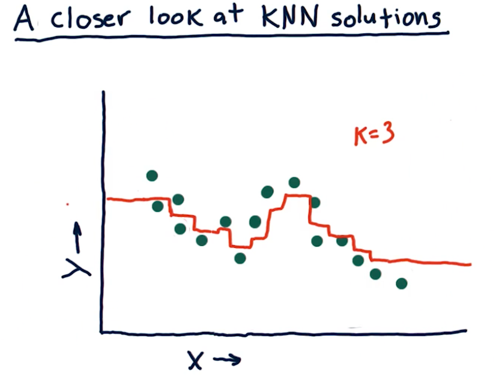
What happens as K varies?
When k approaches N number of entries, we see that the graph drawn provides
us less information - it essentially becomes a straight line for some sets of
data. In contrast, a k value of 1 provides us with a line that is basically
discrete. The final question this section in the lecture asks is:
"As we increase K we are more likely to overfit?". The answer is false,
as k increases the line drawn fits less of the data.
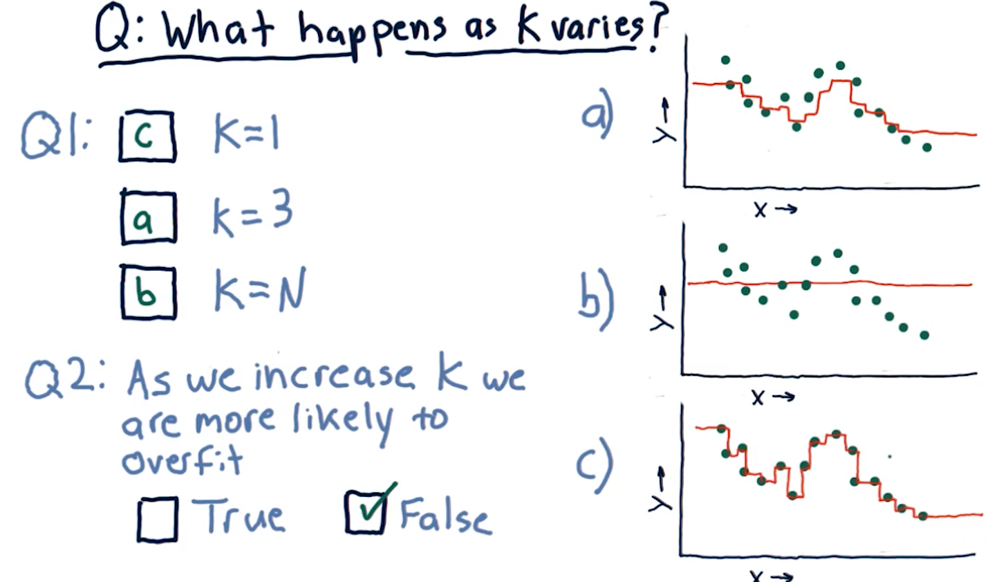
What happens as D varies?
D in this case represents a parametric model's number of parameters:
x1, x2, x3, and so on. This section of the lecture presents the same
question: "As we increase D are we more likely to overfit?". The answer is
true, as we increase the number of parameters in a parametric model, the
line in our graph becomes more complex and fits the data in our dot-graph more
closely.
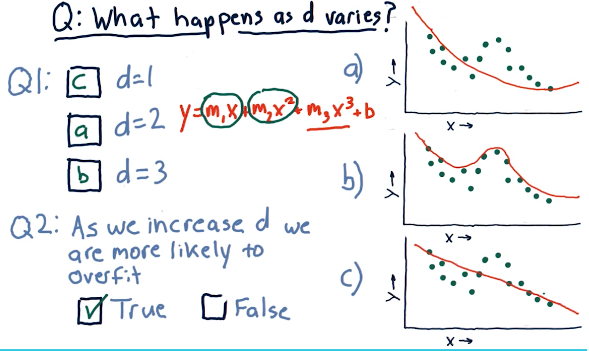
Metric 1: Root Mean Squared error
When assessing a learning algorithm, we need to be able to derive some metrics from the model's prediction. These metrics provide us with the ability to tune our algorithms, and subsequently our models. This section talks about root mean squared (RMS) error. How this metric is derived is provided by the formula in the screenshot, below:

Out of sample error
Out of sample error is the RMS of our model's evaluation of the test data instead of the training data. A representation of this concept from the lecture is provided below:

Cross validation
Researchers categorize trials for a learning algorithm as the following procedure:
- Select a set of data
- Slice the data into train data and test data
- Conduct training on the data marked for training
- Conduct testing on the data marked for testing
- Calculate the RMS error for the model's performance on both the training and the testing data
We conduct cross validation by running a series of trials on the same data, slicing the data into proportionate chunks and alternating which chunks are used for training and which chunks are used for testing. Each alternation of testing and training data is considered a trial.

Roll forward cross validation
Cross validation is a useful technique, however, it poses some limitations for creating machine learning models for trading. Specifically, it allows the model to peek into the future, providing optimistic predictions that aren't necessarily useful for trading.
To avoid this, we ensure that train data is, chronologically, always before the test data. This is called roll forward cross validation and it helps us avoid the issue discussed in the previous paragraph.

Metric 2: Correlation
Another metric, correlation, provides us with information as to how often
our predictions are correct in comparison with some test data. Given a set of
test data, x, y with x being an event and y being the result, our model
should produce another set of data x, y1 where y1 is the model's
prediction.
To measure correlation, we graph y vs y1. Our correlation is
good if our resulting graph is linear and increases as y and y1
increases. Our correlation is bad if there doesn't seem to be any
resulting linear graph.
The NumPy method np.corrcoef() provides us with a measure of
correlation for two sets of data with the following ranges:
1denotes that the data is heavily correlated-1denotes an inverse correlation0denotes no correlation- The values provided by this method can range between the values of
1and-1.
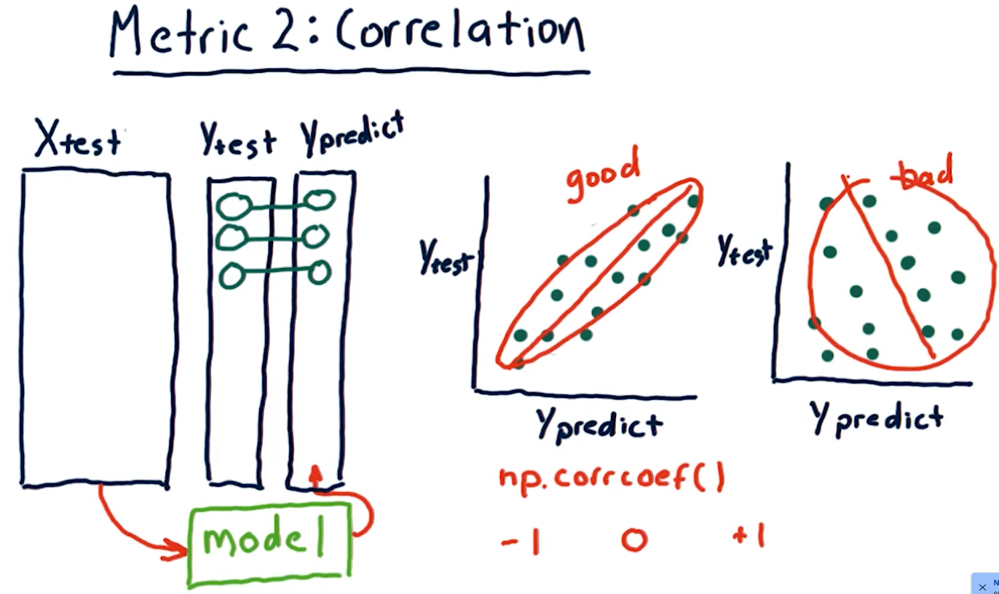
Overfitting
Overfitting is a phenomenon wherein our out of sample error begins to
increase as our degrees of freedom (the number of a parameters in our
parametric algorithm) begins to increase. Our in sample error decreases to
0 as our degrees D approaches N number of samples. As shown in the
diagram below, however, on test data, due to overfitting, our
out of sample error begins to increase as D approaches N.

KNN overfitting
Overfitting for KNN algorithms behaves a bit differently. Because a
KNN-produced line becomes too general as K approaches N, both our
out of sample error and in sample error increase as K approaches N.
The sweet spot for K is somewhere where out of sample error decreases
a significant amount at the cost of in sample error.
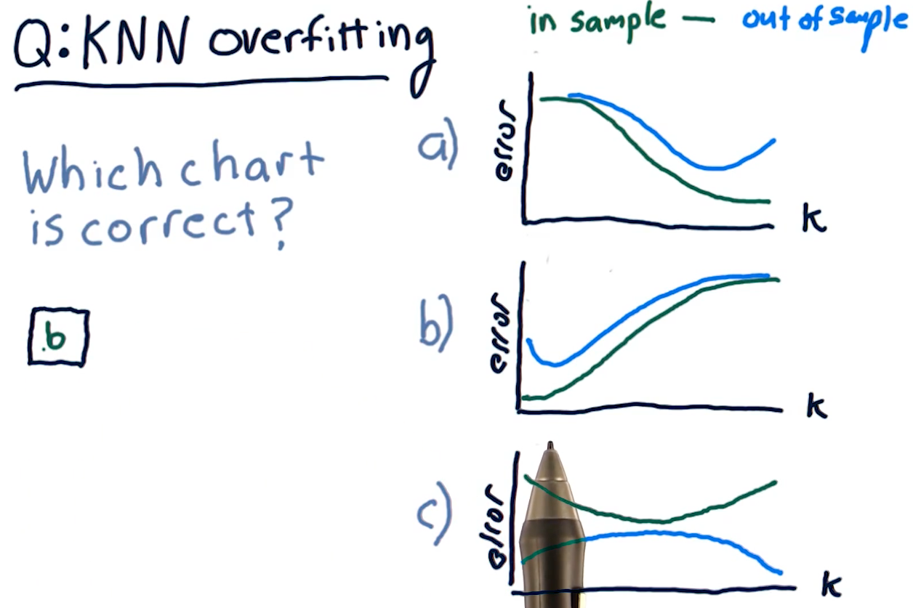
Final considerations
The following diagram outlines pros and cons of each learning algorithm with respect to compute time, query time, etc.

3-4: Ensemble learners - bagging and boosting
Ensemble learners
Creating an ensemble of learners essentially means that we leverage multiple
different machine learning algorithms to produce a series of different models.
For regression-based learning, we provide each produced model an x and
take the mean of their y responses. Why use ensembles? Ensembles provide:
- Lower error
- Less overfitting
- Removal of algorithmic bias
A diagram representing this concept is provided below:
Bootstrap aggregating-bagging
Bagging is a method of creating an ensemble of learners, however, we
utilize the same learning algorithm to create m number of bags and models.
What is a bag? A bag is a set of data derived from the original training
data for a learning algorithm, with up to n' items. n' will always be some
subset of n - usually 60%. The n' items selected from the original data are
random with replacement - we can have duplicate items selected from the
original data.
After we create our m bags with n' number of items, we use these bags to
train our models with the same learning algorithm. Like our ensemble before, we
take the mean of the models' predictions to generate our y.
Bagging example
The example diagram provided below demonstrates how an ensemble of 1NN-generated models, using a different subset of random data for each model, generates a much more smooth predictive line than a single 1NN-generated model. Recall that 1NN-generated models overfit the data, however, if we combine these overfit models into an ensemble, the mean prediction provides better correlation with the data.

Boosting: adaptive boost
Boosting is a technique similar to bagging, however, it aims to provide weight to particular sections of data in the training data set that may be poorly predicted. Boosting conducts the following actions:
- Select random values from
nto generate a bagmofn'values - Train a model and test the model against the original data within
n - Identify
x, ypredictions from this model that performed poorly - Generate new model with
n'values that are weighted towardnvalues with poor predictions - Train a model with the weighted data and generate more
x, ypredictions - Calculate the mean of
ywith the old and new models - Iterate over this procedure
mtimes